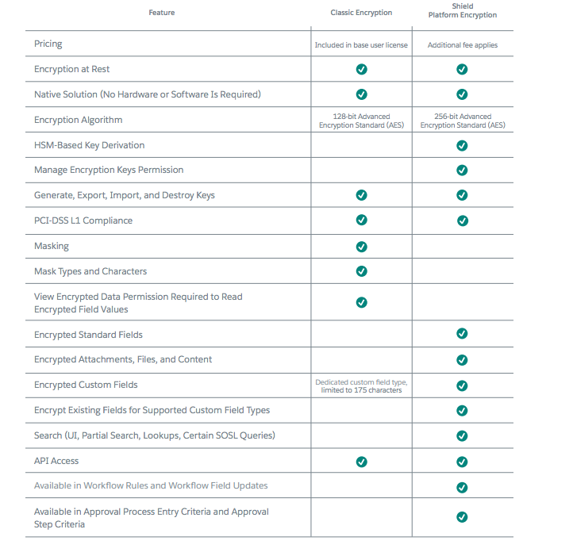
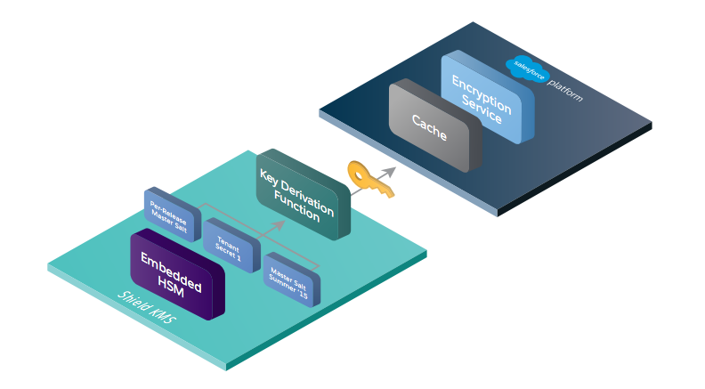
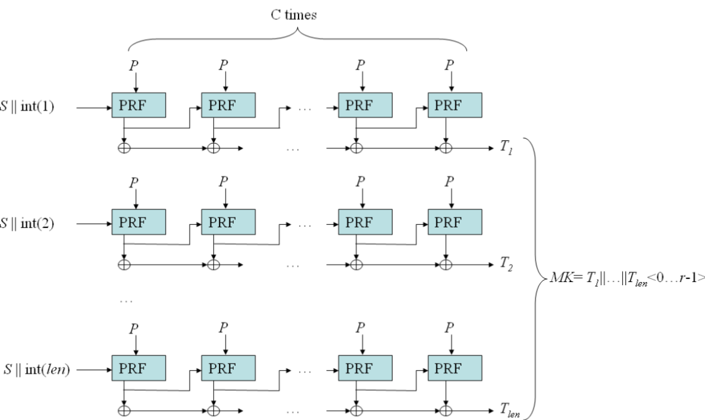

Shield Architecture
Summary
The 3 requirements shared by a wide variety of customers in regulated industries such as financial services, healthcare, and life sciences, as well as manufacturing, technology, and government:
Encrypt sensitive data when it’s stored at rest in the Salesforce cloud.
Support customer-controlled encryption key lifecycles.
Preserve application and Lightning Platform functionality
Trade off
There’s a tradeoff between strong security and functionality. If data is encrypted at rest, preserving Salesforce functionality becomes difficult, if not impossible, depending on where encryption and decryption occur and where the encryption keys are stored. What the business wants often differs from what security and compliance require.
The Salesforce Shield Platform Encryption solution encrypts data at rest when stored on our servers, in the database, in search index files, and the file system.
We don’t address data residency or remote key management, which require off-Salesforce solutions and typically involve on-premises software and complex integrations. To encrypt data at rest and preserve functionality, we built the encryption services natively into the Lightning Platform.
Shield Platform Encryption uses that metadata to tell the other platform features which data is encrypted. This way, we can ensure that critical business functionality — like partial search — continues to work even when data is encrypted.
The Shield Platform Encryption solution uses strong, probabilistic encryption by default on data stored at rest. Shield Platform Encryption uses the Advanced Encryption Standard (AES) with 256-bit keys using CBC mode and a random initialization vector (IV).
While this type of encryption results in a loss of some functionality, such as sort operation, we consider this a reasonable tradeoff in favor of security.
We also offer deterministic encryption:
Deterministic encryption uses the Advanced Encryption Standard (AES) with 256-bit keys using CBC mode and a customer and field-specific static IV.
In this way, deterministic encryption only decreases encryption strength as much as is minimally necessary to allow filtering.
We built a key management framework that scales to our multi-tenant model and gives you complete control over the key management life cycle.
the encryption keys must reside in the Salesforce environment
Adhering to the principle that customers should have complete control over the key life cycle, we built key management functionality into the Setup UI and API
- Customers decide when to generate, supply, rotate, import, export, and destroy keys. Customers also determine who is responsible for performing these tasks.
With the Bring Your Own Keys (BYOK) option, you can generate and store tenant secrets and data encryption keys outside of Salesforce using your own crypto libraries, enterprise key management systems, or hardware security modules. As with all administration tasks, everything is audited.
Hardware security modules (HSMs) into the infrastructure to generate cryptographic key material - shared key management service that creates tenant-specific encryption keys.
These keys aren’t persisted; they are therefore inaccessible to Salesforce employees and, by extension,malicious external attackers.
Salesforce org administrator chooses whether to turn on encryption for standard fields, custom fields, files, and attachments.
Salesforce org administrator also choose which specific fields to encrypt at rest. The driving principle is to encrypt as little as possible to preserve functionality while keeping private, sensitive, confidential, and regulated
Why Encrypt?
Finding right security solution to the type of threats you face
Salesforce Shield Platform Encryption protects data at rest. It shouldn’t be confused with a control that encrypts data in transit, such as Transport Layer Security (which Salesforce provides by default for your org).
Shield Platform Encryption is best suited for:
Protecting against data loss due to unauthorized database access
Bolstering compliance with regulatory requirements or internal security policies
Satisfying contractual obligations to handle sensitive and private data on behalf of customers
In contrast to Classic Encryption, which uses a custom field type in the Salesforce data model, Shield Platform Encryption allows you to encrypt a variety of standard fields, custom fields, and files.

We use metadata to keep information in these files and fields secure while preserving the ability to perform common business tasks.
The platform’s object-relational mapping model includes metadata that describes exactly which data is encrypted.
Encryption and decryption occur in the platform’s application layer as application components are materialized by the runtime engine - to ensure encrypted data isn’t persisted in plaintext.
Shield Key Management Service derives keys on-demand from key material generated by HSMs.
The architecture supports the simultaneous use of multiple encryption keys, enabling customers to quickly rotate and archive keys without losing access to their data
Application components, such as Salesforce objects, aren’t modeled directly in our underlying relational database. Instead, when customers interact with their data in a Salesforce application, the platform’s runtime engine materializes the data using metadata stored separately in the Lightning Platform’s Universal Data Dictionary (UDD). The UDD includes metadata that determines which data is encrypted at runtime.
This way, each tenant’s data is kept secure in the shared database, tenants can customize schema in real time without affecting other tenants’ data, and the application’s code base can be patched or upgraded without breaking tenant-specific customizations.
The data is encrypted directly before it’s stored in the database.
The resulting encrypted payload is stored with metadata about the specific key used to encrypt it. In the case of decryption, data is decrypted as it’s materialized. It is then pushed up through the application pipeline and appears in plaintext to the authorized user who requested it.
Shield Platform Encryption uses the Java Cryptography Extension (JCE) to encrypt and decrypt data. Specifically, Shield Platform Encryption uses the Advanced Encryption Standard (AES256) in CBC mode with a random IV.
Rather than storing data encryption keys on the application server, they are stored in an encrypted key cache. This is a central service that all application servers can access. When the customer accesses encrypted data on the application server, the server uses a data encryption key for a short period of time to perform both encryption and decryption operations. Once this transaction is complete, related memory containing the data encryption key is freed. Thus, the data encryption keys aren’t cached on the application server.

Derived keys are generated on demand from secrets generated by logically and physically separated HSMs. The master secret is generated at the start of each Salesforce release and stored securely in Salesforce’s internal file system.
The customer-specific key material - tenant secret is supplied by customers or generated by customers on demand, and then stored securely in the database.
These secrets, along with a master salt generated at the start of each release, are used as inputs to Password-Based Key Derivation Function 2 (PBKDF2) to derive data encryption keys.
PBKDF2 is run on the Shield Key Management Service (KMS) in a Salesforce data center.
Data encryption keys are sent (encrypted) back to the encryption service running on the Lightning Platform and stored in the encrypted key cache.
What is PBKDF2?
- key derivation functions with a sliding computational cost, aimed to reduce the vulnerability of encrypted keys to brute force attacks. 